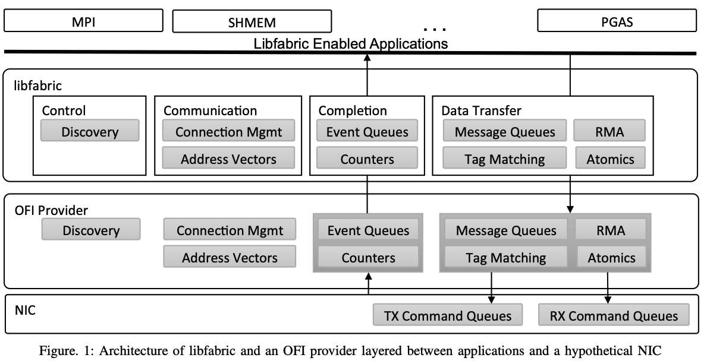
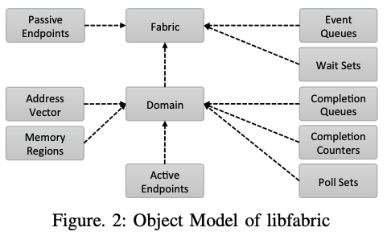
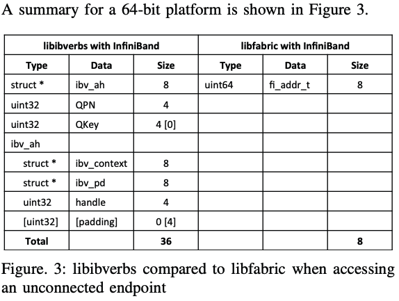
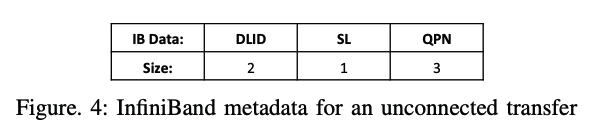
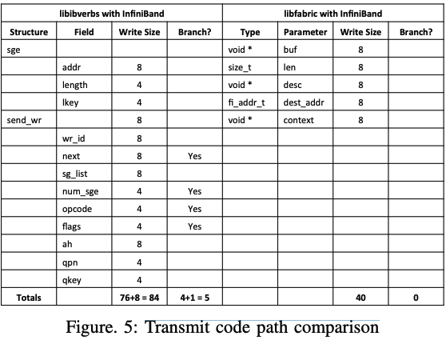

OpenFabrics 接口简介-用于最大限度提高-高性能应用程序效率的新网络接口(API)
OpenFabrics 接口简介-用于最大限度提高-高性能应用程序效率的新网络接口(API)-[译]
2015 IEEE 第 23 届高性能互连年度研讨会
摘要
OpenFabrics Interfaces (OFI) 是一个新的应用程序接口系列，它向中间件和应用程序公开通信服务。 Libfabric 是 OFI 的第一个成员，是在 OpenFabrics 联盟的支持下，由行业、学术界和国家实验室合作伙伴组成的广泛联盟在过去两年中设计的。 libfabric 在 verbs 接口的目标和目标的基础上进行构建和扩展，专门设计用于满足高性能应用程序的性能和可扩展性要求，例如消息传递接口 (MPI) 库、对称分层内存访问 (SHMEM) 库、分区全局地址 Space (PGAS) 编程模型、数据库管理系统 (DBMS) 以及在紧密耦合的网络环境中运行的企业应用程序。 libfabric 的一个关键方面是它被设计为独立于底层网络协议以及网络设备的实现。 本文简要讨论了创建新 API 的动机，描述了驱动其设计的新颖需求收集过程，并总结了 API 的高级架构和设计
关键词: fabric, interconnect, networking, interface(fabric, rdma, 互连, 联网, 接口, 高性能网络API, 兼容性)
1. 简介
OpenFabrics Interfaces（OFI）是一个专注于将通信服务导出到应用程序的框架。 OFI 专为满足高性能计算 (HPC) 应用程序（例如在紧密耦合的网络环境中运行的 MPI、SHMEM、PGAS、DBMS 和企业应用程序）的性能和可扩展性要求而设计。 OFI 的关键组件是：应用程序接口、提供程序库、内核服务、守护进程和测试应用程序(application interfaces, provider libraries, kernel services, daemons, and test applications)。 Libfabric 是一个定义和导出 OFI 用户空间 API 的库，通常是应用程序直接处理的唯一软件。 Libfabric 在常见的基于 Linux 的发行版上受支持。 libfabric API 独立于底层网络协议以及可实现它的特定网络设备的实现。 OFI 基于以应用程序为中心的 I/O 概念，这意味着 libfabric 库旨在使结构服务与应用程序需求保持一致，从而在应用程序和底层结构硬件之间提供紧密的语义配合。 这减少了总体软件开销并提高了通过结构传输或接收数据时的应用程序效率
2. 动机
开发 OFI 的动机源于开发 OpenFabrics 软件 (OFS) 所获得的经验，该软件由 OpenFabrics 联盟 (OFA) 制作和分发 [1]。 OFS 作为 InfiniBand Trade Association (IBTA) Verbs 规范 [2] 的实现开始，随着时间的推移不断发展，包括对 iWARP [3-5] 和 RoCE [6] 规范的支持。 随着这些技术的使用不断增长，关于如何最好地访问底层硬件中可用功能的新想法出现了。 新的应用程序出现了，有可能以以前意想不到的方式利用网络。 此外，还出现了对大幅提高可扩展性和性能的需求。 最近出现了非易失性存储器 (NVM) 等新范例。 所有上述活动共同推动了 SC13 会议上的“Birds-ofa-Feather”会议。 该会议的结果推动了 OFA 组建一个名为 OpenFabrics Interfaces 的新项目，以及一个名为 OpenFabrics Interface Work Group (OFIWG) 的新小组。 从一开始，该项目和相关工作组就寻求吸引已经在使用 OFS、已经超越 OFS 或对高性能互连感兴趣的广泛用户社区。 这些社区被要求贡献他们对现有 OFS 的想法，最重要的是，他们被要求描述他们对与高性能互连连接的要求。 反响热烈。 OFIWG 花了几个月的时间与来自各个团体的热情代表进行互动，包括 MPI、SHMEM、PGAS、DBMS、NVM 等。 结果是一份包含 168 项具体要求的综合要求文件。 有些请求是教育性的——完整的在线文档。 有些是实用的——一系列示例和测试, 有些是组织性的——定义明确的修订和分发机制。 有些是显而易见的，但仍然具有挑战性——可扩展到数百万通信伙伴。 有些是特定于特定用户社区的——提供可供 MPI 使用的标签匹配。 其中一些是现有 OFS 功能的扩展——提供一整套原子操作。 其中一些是改进现有 OFS 功能的请求——重新设计内存注册。 有些针对的是接口的基本结构——将世界划分为应用程序和提供商，并允许用户选择特定的提供商和功能。 有些是全新的——提供远程字节级寻址。 在审查了主要要求（包括独立于任何给定网络技术的要求以及新 API 比其他网络 API 更抽象并与应用程序使用更紧密结合的要求）后，OFIWG 得出结论：新 API 完全基于应用程序要求 是正确的方向。
3.架构概述
图 1 突出显示了两个主要 OFI 组件（libfabric 库和 OFI 提供程序）的总体架构，它们位于支持 OFI 的应用程序和支持进程直接 I/O 的假设 NIC 之间。 libfabric 库定义了应用程序使用的接口，并提供了一些通用服务。 然而，OFI 的大部分实施工作都由提供商负责。 提供商连接到 libfabric 并提供对结构硬件和服务的访问。 提供程序通常与特定的硬件设备或 NIC 相关联。由于 libfabric 的结构，应用程序直接访问提供程序实现来执行大多数操作，以确保尽可能低的软件延迟。 如图 1 所示，libfabric 可分为四个主要服务。

图 1：libfabric 的架构以及在应用程序和假设的 NIC 之间分层的 OFI 提供程序
A. 控制服务
应用程序使用这些服务来发现有关系统中可用的通信服务类型的信息。 例如，发现将指示哪些结构可以从本地节点到达，以及每个结构提供什么类型的通信。 发现服务允许应用程序向底层提供者请求特定的特性或功能，例如所需的通信模型。 作为响应，提供商可以指示应用程序可以使用哪些附加功能而不会对性能或可扩展性产生负面影响，以及应用程序如何最好地利用底层结构硬件的要求。 提供者通过设置模式位来指示后者，这些模式位对应用程序使用接口的限制进行编码。 此类限制是由于基于特定提供商实现的内部结构的性能原因造成的。 发现过程的结果是提供商使用应用程序的请求来选择最适合该应用程序的需求和提供商的限制的软件路径。
B. 通信服务
这些服务用于建立节点之间的通信。 它们包括建立连接（连接管理）的调用以及用于地址无连接端点（地址向量）。 通信接口旨在抽象用于连接和配置通信端点的结构和硬件特定细节。 连接接口以套接字为模型，以支持易用性。 然而，地址向量是围绕最小化为潜在的数百万远程对等点存储寻址数据所需的内存量而设计的。
C. 完成服务
Libfabric 导出异步接口，提供者使用完成服务直接向应用程序报告先前启动的异步操作的结果。 可以使用事件队列或影响较小的计数器来报告完成情况。 事件队列中的条目以多种格式提供有关已完成操作的详细信息，应用程序可以选择这些格式，以最大限度地减少提供程序必须设置的数据。 计数器仅报告已完成操作的数量。
D. 数据传输服务
这些服务是围绕不同通信范例设计的接口集。 图 1 显示了四种基本数据传输接口集。 这些数据传输服务使应用程序可以直接访问提供商的相应服务的实现。
(i) 消息队列公开了发送和接收维护消息边界的数据的能力。 它们充当 FIFO，来自远程发送方的消息按照本地提供程序接收的顺序与排队的接收请求进行匹配。
(ii)标签匹配与消息队列类似，因为它维护消息边界，但不同之处在于，接收到的消息根据消息中携带的小引导标签定向到排队的接收请求。
(iii) RMA 代表“远程内存访问”。 RMA 传输允许应用程序将数据从本地内存直接写入目标进程中的指定内存位置，或将数据直接从目标进程中的指定内存位置读入本地内存。
(iv) 原子操作与 RMA 传输类似，因为它们允许直接访问目标进程中的指定内存位置，但不同之处在于，它们允许操纵该内存中的值，例如递增或递减它。 数据传输接口旨在消除提供程序实现中可能出现的分支并减少内存引用的数量，例如，通过使其能够预格式化命令缓冲区以进一步减少传输中执行的指令数量
4. 对象模型
libfabric 架构基于面向对象的设计理念。 在高层，各个结构服务与一组接口相关联。 例如，可以使用一组定义明确的函数来访问 RMA 服务。 接口集与 libfabric 公开的对象相关联。 对象和接口集之间的关系大致类似于面向对象的类及其成员函数之间的关系，尽管实际实现因性能和可伸缩性原因而有所不同。 根据发现服务的结果配置对象。 为了在应用程序和结构硬件之间实现优化的代码路径，提供程序根据提供程序支持的模式和应用程序请求的功能动态地将对象与接口集关联起来。 图 2 显示了 libfabric 对象之间父子关系的高级视图

图2：libfabric的对象模型
(i) 结构(fabric)：结构表示访问单个物理或虚拟网络的硬件和软件资源的集合。 系统上所有可以通过Fabric相互通信的网络端口都属于同一个Fabric域。 结构不仅包括本地和远程 NIC，还包括相应的软件、交换机、路由器以及任何必要的结构或子网管理组件。 (ii) 域(domain)：域代表与结构的逻辑连接。 例如，域可以映射到物理或虚拟NIC。 域定义了结构资源可以关联的边界。 每个域都属于一个结构。 域的属性描述了如何使用关联的资源。 域属性包括有关应用程序的线程模型以及如何在线程之间分配结构资源的信息。 它还定义了端点、完成队列和计数器以及地址向量之间发生的交互。 目的是让应用程序传达足够的信息，以便提供商可以选择适合其需求的优化实现。 (iii) 被动端点(Passive Endpoint)：被动端点被面向连接的协议用来监听传入的连接请求，概念上相当于监听套接字。 (iv) 活动端点(Active Endpoint)：活动端点（或者简称为端点）代表通信门户，并且在概念上类似于套接字。 所有数据传输操作均在端点上启动,
端点通常与发送上下文和/或接收上下文相关联。 这些上下文通常使用直接映射到进程地址空间的硬件队列来实现，从而可以绕过操作系统内核进行数据传输。 数据传输请求由底层提供者转换为插入到传输和/或接收上下文中的命令。 更高级的端点使用模型允许资源共享。 由于发送和接收上下文可能与有限的硬件资源相关联，因此 libfabric 定义了在多个端点之间共享上下文的机制。 共享上下文允许应用程序或资源管理器确定资源分配的优先级以及共享硬件资源的使用方式。 与共享上下文相比，最终端点模型称为可扩展端点(SEP)。 可扩展端点允许单个端点通过具有多个传输和/或接收上下文来利用多个底层硬件资源。 可扩展上下文允许应用程序分离资源以避免线程同步或数据排序限制，而无需增加寻址所需的内存量。 (v) 事件队列：事件队列（EQ）用于收集和报告异步操作和事件的完成情况。 它处理与数据传输操作不直接关联的控制事件，例如连接请求和异步错误。 (vi)完成队列：完成队列(CQ)是用于报告数据传输操作完成的高性能队列。 发送和接收上下文与完成队列相关联。 从完成队列读取的事件的格式由应用程序确定。 这使得数据结构紧凑，并且对内存的写入最少。 此外，CQ 界面围绕成功完成的报告操作进行了优化，错误完成则“带外”处理。 这允许错误事件报告附加数据，而不会产生在成功传输的常见情况下不必要的额外开销。 (vii) 完成计数器：完成计数器是完成队列的轻量级替代方案，因为它的使用只是增加计数器而不是将条目放入队列中。 与 CQ 类似，一个端点与一个或多个计数器相关联。 然而，计数器在它们可以跟踪的完成类型方面提供了更精细的粒度。 (viii)等待集：等待集提供单个底层等待对象，每当属于该集的事件队列、完成队列或计数器上发生指定条件时，该对象将被通知。 等待集启用用于挂起和发信号线程的优化方法。 应用程序可以请求使用特定类型的等待对象，例如文件描述符，或者允许提供者选择最佳对象。 后者为当前或未来的底层实现提供了灵活性
(ix) 轮询集：尽管 libfabric 的架构旨在支持将数据传输直接卸载到硬件的提供程序，但它也支持使用主机 CPU 进行操作的提供程序。 Libfabric 定义了一个手动进度模型，其中应用程序同意将其线程用于此目的，从而避免底层软件库分配额外线程的需要。 轮询集使应用程序能够将完成队列或计数器组合在一起，从而允许一个轮询调用在多个完成上取得进展。 (x) 内存区域：内存区域描述应用程序的本地内存缓冲区。 为了使结构提供者能够在某些类型的数据传输操作（例如 RMA 和原子操作）期间访问应用程序内存，应用程序必须首先通过构造内存区域向结构提供者授予适当的权限。 Libfabric 定义了多种创建内存区域的模式。 它支持与现有 InfiniBandTM 和 iWARPTM 硬件很好地配合的方法，但为了扩展到数百万个对等点，还允许使用偏移量和用户指定的内存键进行寻址。
(xi) 地址向量(Address Vector)：无连接端点使用地址向量将更自然的应用程序使用的更高级别的地址（例如 IP 地址）映射到特定于结构的地址。 这使得提供商能够减少维护大型地址查找表所需的内存量，并消除数据传输操作期间昂贵的地址解析和查找方法。
Libfabric 借用并扩展了其他 API 中的概念，然后将它们整合到一个可扩展的框架中。 可以轻松引入其他对象，或者可以向现有对象添加新接口。 然而，对象定义和接口是专门为在需要时促进软件扩展和低延迟而设计的。 我们努力确保对象提供正确的抽象级别，以避免应用程序或提供者效率低下。
5. 现状
libfabric 的初始 (1.0) 版本现已发布 [7, 8]，带有完整的用户级文档（“手册页”）[9]。 新版本计划每季度发布一次。 此版本为 HPC 应用程序提供了足够的支持，以适应使用其接口。 可以改进的领域应向 OFI 工作组报告，方法是在 ofiwg 邮件列表中发布问题、在每周一次电话会议期间提请工作组注意，或者在 libfabric GitHubTM 中提出问题 数据库。 尽管 1.0 版本定义的 API 旨在启用优化的代码路径，但利用这些功能的提供程序优化将在接下来的几个版本中分阶段实施。 1.0 版本支持多个提供商。 包含一个用于开发目的的套接字提供程序，并在 Linux 和 Mac OS X 系统上运行 37。 它实现了 libfabric 公开的全套功能。 通用动词提供程序允许 libfabric 在支持 libibverbs 接口的硬件上运行。 “usnic”提供商支持思科虚拟化接口卡 (VIC) 硬件的 usNIC（用户空间 NIC）功能。 最后，PSM 提供程序支持英特尔的性能扩展消息传递 (PSM) 接口。 除了当前的提供商之外，对其他硬件的支持正在积极开发中。 Cray Aries 网络提供商将在 1.0 版本后提供。 MXM 提供商将增强对 Mellanox 硬件的 libfabric 支持。 未来的支持还将包括英特尔全新的 Omni Path 架构。 针对特定硬件和供应商的优化也在开发中。 这项工作的详细信息将在接近完成时公布，并且可以通过 GitHub 存储库进行跟踪。
6. 接口分析
libfabric 接口旨在实现多个目标。 其中包括硬件实现独立性、改进的软件可扩展性以及降低的软件开销。 为了分析所提出的接口是否满足这些目标，我们提供了使用 libfabric 与 HPC 中间件广泛使用的接口 libibverbs 的比较。 为了确保比较公平合理，我们将比较限制为使用基于 InfiniBand 的硬件（libibverbs 所基于的架构）。 此外，我们关注 API 本身对应用程序性能的影响，而不是底层实现可能产生的差异。
A. 可扩展性
libfabric 的地址向量接口是专门为提高软件可扩展性而设计的。 为了进行比较，我们分析了使用未连接端点时访问对等进程所需的内存占用。 图 3 显示了 64 位平台的摘要。访问未连接端点时 libibverbs 与 libfabric 的比较

图3：访问未连接端点时 libibverbs 与 libfabric 的比较
使用 libibverbs 接口的应用程序需要每个远程对等点总共 36 个字节的相关寻址元数据。提交传输请求的应用程序必须提供 3 个输入参数：指向地址句柄结构的指针（ibv ah）、目标队列对号（QPN）和队列密钥（qkey）。 对于此分析，假设应用程序使用单个 qkey，该 qkey 可以被忽略。 发送到每个对等进程需要一个地址句柄，并由 libibverbs 库分配。 地址句柄的最小大小如图 3 所示，由两个指针以及一个 32 位内核标识符或句柄组成。 为了考虑数据对齐，我们添加了 4 个额外字节的填充，我们将在下面使用它们
对于 libfabric，数据传输要求应用程序提供数据类型 fi_addr_t 的输入值。 它被定义为 uint64。 libfabric 中的地址向量可以是两种不同类型之一：FI_AV_TABLE 或 FI_AV_MAP。 对于 FI_AV_TABLE，应用程序使用简单索引引用对等点。 对于 MPI 或 SHMEM 等应用程序，索引可以映射到等级或 PE 编号，从而消除了寻址所需的任何应用程序级存储。 然而，使用 FI_AV_MAP，应用程序必须存储不透明的 fi_addr_t 地址，这需要每个对等方 8 字节的存储空间。 应该注意的是，如果元数据只是简单地移动到接口下面，那么应用程序使用接口所需的内存占用是没有意义的。 尽管最终所需的元数据量是特定于结构的，但对于 InfiniBand 硬件，将传输发送到未连接的队列对所需的元数据如图 4 所示。

图 4：未连接传输的 InfiniBand 元数据
子网内的 InfiniBand 路径定义为元组：<SLID, DLID, SL>。 数据包在对等端点之间传输时携带此元数据。 如前所述，非连接传输还需要 qkey（对于给定作业来说可能是恒定的）和 qpn（为每个对等队列对随机选择）。 使用由本地端点确定的 SLID，要到达给定对等点，需要存储元组：<DLID、SL、QPN>。 如图 4 所示，这需要 6 字节的元数据。 （请注意，SL 只有 4 位，但扩展为使用完整字节）libibverbs API 图 3 中已考虑 QPN。但是，libibverbs 提供者必须维护每个目标的 DLID 和 SL。 我们建议提供者可以将此元数据存储在编译器通常提供结构填充的空间中的地址句柄（ibv_ah）中。 这可以最佳地将每个对等点的内存占用量保持在 36 字节。 使用类似的元数据，图 4 显示 FI_AV_TABLE 类型的 libfabric 地址向量将内存占用量减少到仅 6 个字节，这需要在任何传输调用上进行表查找，其成本类似于取消引用指向struct ibv_ah, 如果使用 FI_AV_MAP，则内存占用仍为每个对等点 8 字节，因为 fi_addr_t 直接对 <DLID、SL、QPN> 进行编码，而未使用额外的位。 对于这两种地址向量类型，内存占用量减少了大约 80%。 地址向量类型的应用程序选择就变成了进一步优化内存占用或传输执行时间的问题
B. 性能优化
为了分析性能优化，我们检查由接口定义本身产生的传输代码路径。 对于此分析，我们测量应用程序为了使用该接口必须调用的内存写入的计数和字节数。 此外，我们还确定 API 导致底层提供程序需要采用条件分支（包括结构化循环）的位置，以确保正确操作。 图 5 总结了这一分析。 libibverbs 接口使用单个接口 ibv_post_send 到提供程序中传输数据，其原型如下： int ibv_post_send(struct ibv_qp *qp, struct ibv_send_wr *wr, struct ibv_send_wr **bad_wr)
为了向未连接的对等方发送传输，必须填写图 5 中所示的字段。 此外，wr（对发送工作请求结构的引用）以及 bad_wr 参数必须写入堆栈。 最终结果是，作为传输操作的一部分，应用程序必须写入 14 次内存写入，共 84 个字节的元数据。 （本研究忽略 qp 参数及其相应的 libfabric ep 参数。）

图5: 传输码路比较
此外，如果我们检查工作请求字段，我们可以识别那些将导致底层提供者分支的字段。 发送工作请求可以链接在一起，并且 SGE 的数量是可变的。 这两个字段都会导致提供程序代码中的 for 循环, 操作类型通过操作码字段指定。 由于操作码和标志字段确定工作请求的哪些其他字段有效，因此提供者必须检查这些字段并采取相应措施。 最后，libibverbs 定义了提供者的单个入口点。 所有队列对上的传输操作，无论其类型如何，都从单个 ibv_post_send 入口点分支出来。 总的来说，在将请求写入硬件之前，传输调用至少需要 5 个分支。 （对一个提供商的代码审查表明，至少会采用 19 个分支，尽管我们怀疑可以通过代码重组来减少数量。）另一方面，Libfabric 关联每个端点的入口点，并提供多个调用，类似于 套接字传输调用 send、write、writev 和 sendmsg。 数据传输标志被指定为端点初始化的一部分，这使得它们能够从传输路径中删除。 对于发送单个消息的传输调用，libfabric API 要求应用程序将 5 个值写入堆栈，总共 40 个字节的元数据。 librafbric自己的API代码不会在提供者代码分支中分支进行判断.
7. 总结
libfabric 接口是由应用程序开发人员和硬件提供商共同设计的。 其结果是 API 不仅是为满足应用程序需求而定制的，而且还旨在实现高效实施。 Libfabric 旨在很好地映射到 MPI、SHMEM、PGAS、DBMS 和套接字应用程序。 此外，还认真考虑了如何在各种硬件和结构上实现这些接口。 OFIWG 最初的重点是在各种硬件上快速启用 libfabric，以便应用程序开发人员可以开始移植他们的应用程序并探索其用途。 libfabric 开发的下一阶段重点是创建本机、优化的提供程序。
REFERENCES 参考
-
[1] OpenFabrics Alliance, “http://www.openfabrics.org.” OFA联盟官网
-
[2] Infiniband Trade Association, “Infiniband Architecture Specification Volume 1, Release 1.2.1,” Nov. 2007. IB协会及IB规范卷1
-
[3] R. Recio, B. Metzler, P. Culley, J. Hilland, and D. Garcia, “A Remote Direct Memory Access Protocol Specification,” RFC 5040, Oct. 2007. [Online]. Available: http://www.ietf.org/rfc/ rfc5040.txt 远程直接内存访问协议规范和RFC 5040
-
[4] H. Shah, J. Pinkerton, R. Recio, and P. Culley, “Direct Data Placement over Reliable Transports,” RFC 5041, Oct. 2007. [Online]. Available: http://www.ietf.org/rfc/rfc5041.txt 通过可靠传输直接进行数据放置和RFC 5041
-
[5] P. Culley, U. Elzur, R. Recio, S. Bailey, and J. Carrier, “Marker PDU Aligned Framing for TCP Specification,” RFC 5044, Oct. 2007. [Online]. Available: http://www.ietf.org/rfc/rfc5044.txt TCP 规范的标记 PDU 对齐成帧和RFC 5044
-
[6] Infiniband Trade Association, “Supplement to Infiniband Architecture Specification Volume 1, Release 1.2.1: Annex A16: RDMA over Converged Ethernet (RoCE),” Apr. 2010. IB协会和Infiniband 架构规范第 1 卷的补充, RoCE
-
[7] OpenFabrics Interfaces, “https://github.com/ofiwg/libfabric.” OFI GIT代码库
-
[8] Libfabric Programmer’s Manual, “http://ofiwg.github.io/libfabric.” OFI编程手册
-
[9] Libfabric man pages v1.0.0 release, “http://ofiwg.github.io/libfabric/v1.0.0/man.” OFI用户手册
论文地址
A Brief Introduction to the OpenFabrics Interfaces A New Network API for Maximizing High Performance Application Efficiency
https://www.cs.mtsu.edu/~waderholdt/6430/papers/07312664.pdf
晓兵
博客: https://logread.cn | https://blog.csdn.net/ssbandjl | https://cloud.tencent.com/developer/user/5060293/articles
weixin: ssbandjl
公众号: 云原生云

- 原文作者：晓兵
- 原文链接：https://logread.cn/post/net/libfabric_hpc_net_api_rdma_daos_mercury/
- 版权声明：本作品采用知识共享署名-非商业性使用-禁止演绎 4.0 国际许可协议进行许可，非商业转载请注明出处（作者，原文链接），商业转载请联系作者获得授权。